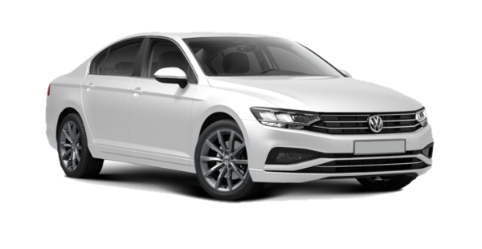
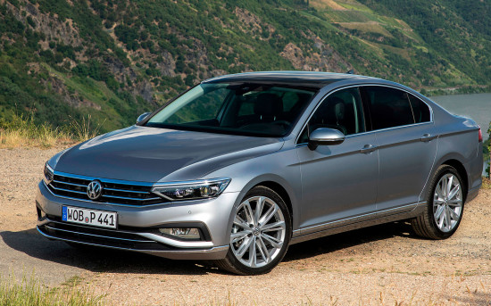
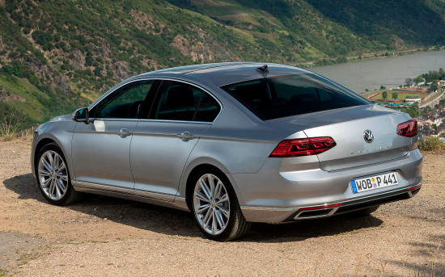
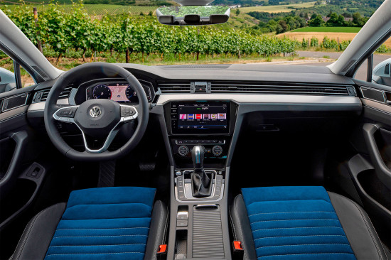
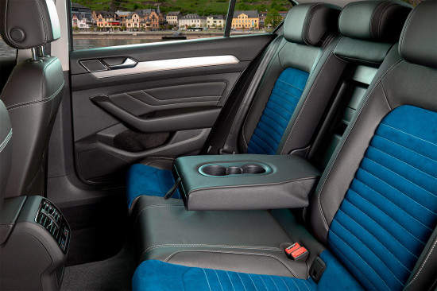

Volkswagen Passat
Краткое описание
Volkswagen Passat — передне- или полноприводный среднеразмерный седан (то есть — представитель «D-сегмента» по европейской классификации), в котором «уживаются» солидный и лаконичный дизайн, просторный салон, производительная техническая «начинка» и сбалансированный «ездовой» потенциал... Passat 8-го поколения — по-прежнему игрок европейского класса D, который вытянулся на 4775 мм в длину, его высота насчитывает 1483 мм, а ширина составляет 1832 мм. На колесную базу у седана приходится 2786 мм, а расстояние от днища до дороги равно 160 мм.
Подробное описание
Внешний вид
Седан выглядит солидно и приземисто, а разгадка тому — пропорции, которые по сравнению с предшественником изменились кардинально. Однако во внешности немецкого бестселлера не так уж и много эффектных дизайнерских решений, за которые мог бы зацепиться взгляд. Передняя часть седана Volkswagen Passat 8-го поколения отличается интересно прорисованными фарами с линиями светодиодных ходовых огней и опять-таки светодиодной «начинкой», соединенными между собой хромированными перекладинами решетки радиатора. Дополняет картину рельефный бампер с аэродинамическими элементами и стильными противотуманками. Внушительный силуэт Фольксвагена Пассата восьмой генерации подчеркивает купеобразная крыша, длинный покатый капот, острые росчерки выштамповок и «мускулистые» арки колес с крупными дисками внутри. Задняя часть автомобиля навеивает ассоциации с более престижным Phaeton за счет формы светодиодных фонарей, графика которых зависит от комплектации, и мощного бампера с двумя интегрированными патрубками выпускной системы в виде трапеций.
Интерьер
Внутреннее оформление выглядит интересно и дорого, даже более того — своим видом он напоминает модели премиум-класса. Ну а его самая запоминающаяся черта — линия воздуховодов, пересекающая всю панель и своим оформлением перекликающаяся с решеткой радиатора. Многофункциональный руль по-спортивному усечен в нижней части, а комбинация приборов может быть представлена «аналоговым инструментарием», утопленным в неглубоких «колодцах» или интерактивной электронной панелью 11.7-дюймовым дисплеем. Центральная консоль выглядит стильно и современно, а возглавляет ее дисплей мультимедийного комплекса, который в зависимости от исполнения может иметь диагональ 6.5, 8.0 или 9.2 дюйма. Чуть ниже располагается блок управления «микроклиматом» с тремя шайбами и вспомогательными кнопками. Отделочные материалы внутри и проработка деталей — на уровне представителей более престижных классов. В салоне автомобиля задействованы мягкие пластики, натуральная кожа, вставки из настоящего дерева и алюминия. Передние кресла с широко расставленными валиками боковой поддержки обладают приятным наполнением и большими диапазонами регулировок. Задний диван отформирован под двоих человек, но запаса пространства хватит и третьему, хотя слишком рослые седоки будут подпирать головой покатую крышу. Опционально для «галерки» предлагается индивидуальный климатический блок.
Характеристики товара
Технические характеристики
На российском рынке рестайлинговый Volkswagen Passat восьмого поколения предлагается исключительно с двумя бензиновыми
четырехцилиндровыми двигателями TSI, укомплектованными турбонаддувом, непосредственным
впрыском горючего, 16-клапанным ГРМ типа DOHC и фазовращателями на впуске и выпуске:
- Первый вариант — 1.4-литровый агрегат, который генерирует 150 лошадиных сил
при 5000-6000 об/минуту и 250 Нм крутящего момента при 1500-3000 об/минуту. - Второй — агрегат рабочим объемом 2.0 литра, вырабатывающий 190 л.с.
при 4180-6000 об/минуту и 320 Нм пиковой тяги при 1500-4100 об/минуту.
Оба двигателя трудятся вскладчину с 7-диапазонным «роботом» DSG с двумя сцеплениями
и ведущими колесами передней оси, однако «младшему» по умолчанию полагается 6-ступенчатая «механика».
Скорость, динамика и расход
С места до первой «сотни» Passat ускоряется спустя 7.5-8.8 секунды,
предельно набирает 213-238 км/ч, а в смешанных условиях в среднем
потребляет от 5.5 до 6.3 литров горючего на каждые 100 км пути
Конструктивные особенности
VW Passat B8 построен на модульной архитектуре MQB, использование которой позволило автомобилю
разом сбросить до 85 килограмм веса. Передняя подвеска на трехобъемнике представлена стойками МакФерсон,
задняя — четырехрычажной конструкцией со стальным подрамником на переднеприводных модификациях
и алюминиевым на полноприводных машинах. В рулевой механизм встроен электромеханический усилитель управления
с прогрессивной характеристикой, а тормозная система с дисками «в круг» (спереди — вентилируемыми)
оснащена системами ABS, EBD и другими электронными помощниками.
Опционально предлагается спортивное шасси или адаптивная подвеска DCC с электронноуправляемыми амортизаторами.
Внешние габариты
- Длина, мм: 4775
- Ширина, мм: 1832
- Высота, мм: 1477
- Колесная база, мм: 2791
- Объем топливного бака, л: 60
- Объем багажника, л: 500